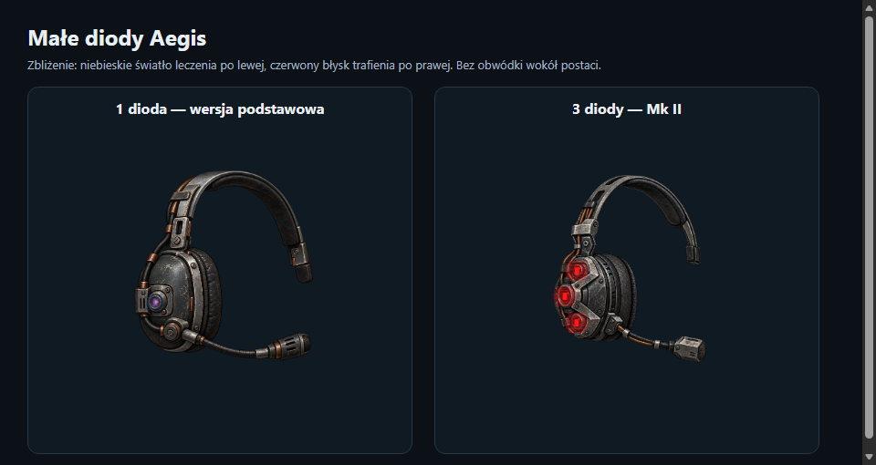

AEGIS / MULTI-TOOL-V2 1.2.7Komunikatory regeneracyjne
Dwie wersje. Jedno ogniwo. Standardowe radio działa również bez baterii. Mody medyczne są opcjonalne.

Komunikator regeneracyjny
CIŚNIENIE + REGENERACJAOchrona przed ciśnieniem, stopniowe leczenie i pełna regeneracja obsługiwanej anatomii.

Komunikator osłonowy Mk II
POCHŁANIANIE TRAFIEŃ + SZYBSZE LECZENIELeczenie urazów i chorób 4 razy szybsze (20 jednostek/s), odtwarzanie anatomii o 50% szybsze niż w modelu podstawowym. Cena za jednostkę leczenia pozostaje taka sama. Dodatkowo pochłanianie natywnych ataków z każdej strony. Silniejsze trafienia zużywają więcej energii.
Małe diody i dźwięki
Diody migoczą na czerwono przy trafieniach i ochronie przed ciśnieniem, a na niebiesko podczas regeneracji. Poniżej powiększona ilustracja, nie zrzut z gry. Przyciski pozwalają odsłuchać sygnały trafienia przy różnym poziomie baterii.

Własne słuchawki słychać niezależnie od kamery, pozostałe przestrzennie. Alarmy 20%, 10% i 0% działają również bez trafień.
Orientacyjny czas działania
Pełne standardowe ogniwo: około 40 sekund samej ochrony przed ciśnieniem. Leczenie i trafienia skracają ten czas. Bot wymienia baterię przy 10% lub mniej, jeśli znajdzie dostępny, lepszy zapas.
Grafiki: imagegen. Dźwięki: własna synteza. Błyski diod: renderer Lua. Zgodność z nieznanymi mechanikami modów wymaga adapterów.